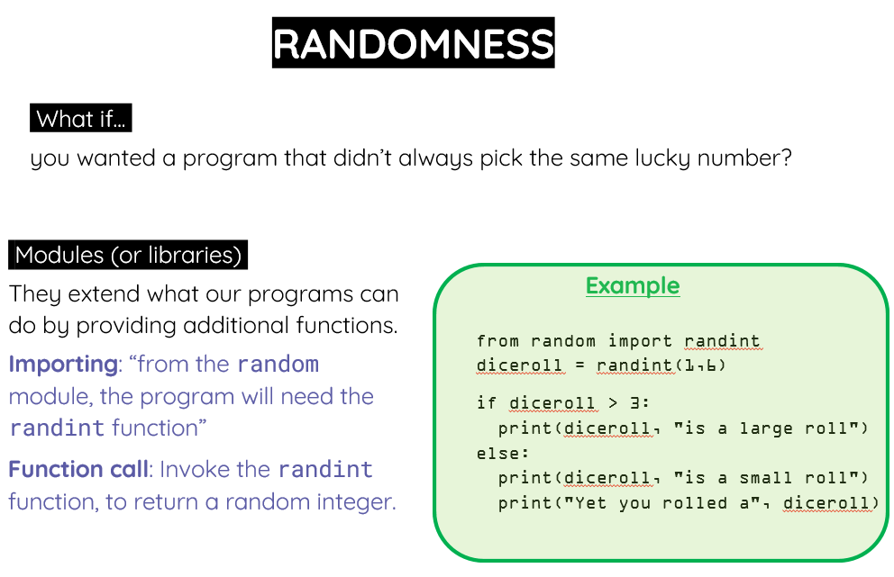

Page 6 of 7
Randomness

https://www.w3schools.com/python/module_random.asp
Activities
12Activity 12
Write a program that simulates the process of rolling a six-sided dice. When the program is executed, a random number is generated from the set {1, 2, 3, 4, 5, 6}. Show the number on the screen.
TIP: Read https://www.w3schools.com/python/ref_random_randint.asp
13Activity 13
Modify the previous program to create a simple number guessing game.
- the user tells the computer the range of the numbers
- The computer generates a random number between the range
- The users try to guess the number
- If the user guesses the secret number (randomly generated), then print “Congratulations”. Otherwise, print “Sorry!”
EXAMPLE OF OUTPUT: Tell me the lowest: 4 Tell me the highest 10 I have generated a secret number… please try to guess it! 8 Sorry! The secret number was 9.
14Activity 14
Random Password Generator
Objective: Create a program that generates a random, secure password.
Instructions:
• Provide 3 lists of passwords: easy, medium and complex password.
• The user will choose what kind of password he wants, and then the computer will pick a password from the selected list.
• Use random.choice() to pick the item from each.
EXAMPLE TO HELP:
15Activity 15
Rock, Paper, Scissors Game
Objective: Build a simple game where the player competes against the computer in rock, paper, scissors.
Instructions:
• Use random to let the computer randomly select rock, paper, or scissors.
• Allow the player to input their choice.
• Determine the winner based on the rules of the game.
16Activity 16
Random Story Generator
Objective: Use randomization to create unique, funny short stories.
Instructions:
• Provide lists of different character questions.
• Ask several questions to the user and make a funny story with them.
• Use random.choice() to select one element from each list to form a story.
• Encourage students to expand the lists and add more elements to increase the variety of stories generated.